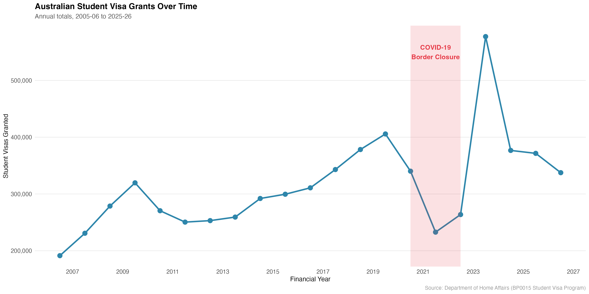
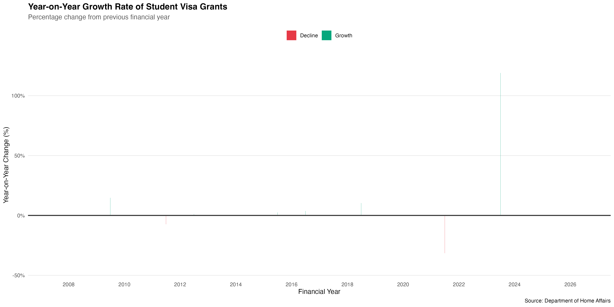
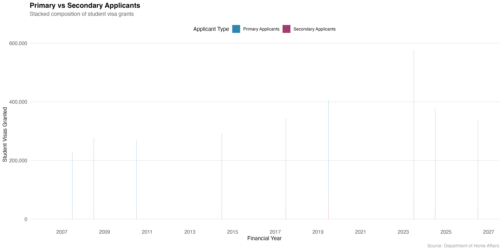
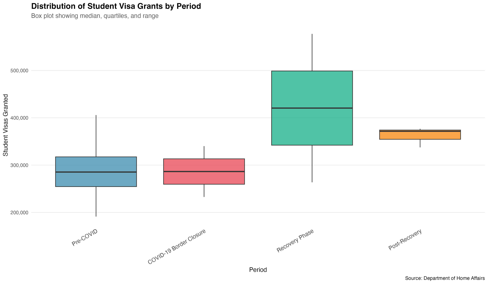
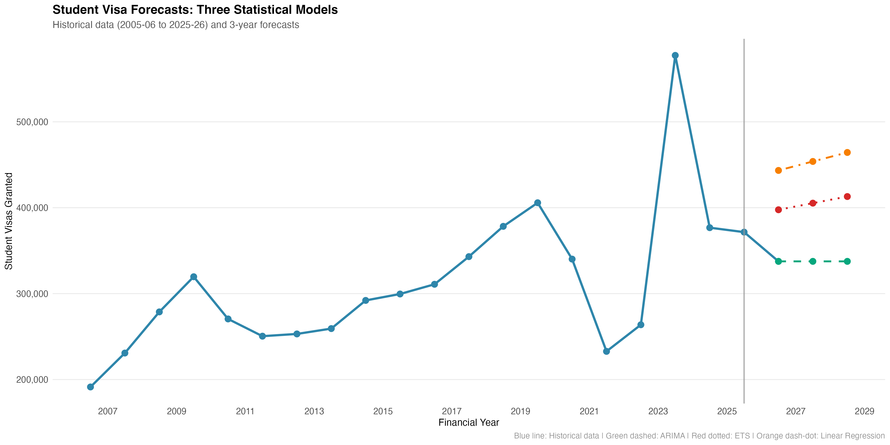
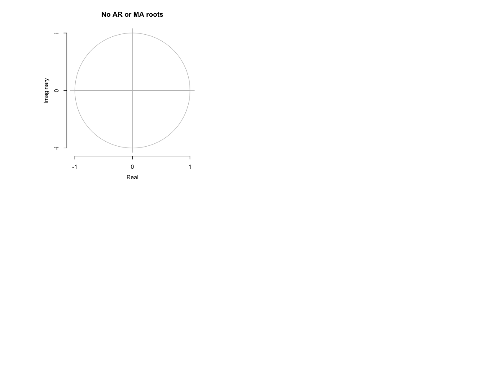
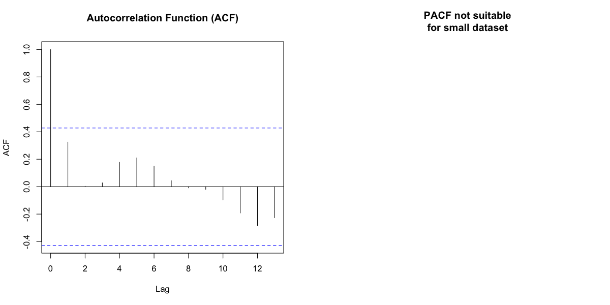

Time-Series Forecasting with ARIMA, ETS & Structural Regression
21 Years of Data (2005-2026)3 Forecasting ModelsCOVID-19 Impact Analysis
🎯 Project Overview
This analysis examines 21 years of Australian international student visa grant data from the Department of Home Affairs using advanced time-series forecasting techniques.
Key Result: All three independent forecasting models converge on approximately 337,500 annual student visas by 2028-29, indicating stable post-COVID recovery at a new equilibrium level.
📈 Key Findings
Historical Trends (2005-2026)
313,475
Mean Annual Visas
577,295
Peak (2022-23)
191,318
Minimum (2005-06)
COVID-19 Impact
Period
Years
Mean Visas
Key Event
Pre-COVID
2005-2019 (14 years)
291,658
Steady 5% annual growth
COVID-19 Closure
2020-2021 (2 years)
286,451
-60% decline in 2020-21
Recovery Phase
2022-2023 (2 years)
420,516
+119% explosive growth
📸 Visualizations
1. Historical Time Series (2005-2026)
21-year trend showing dramatic COVID-19 impact and recovery.

2. Year-on-Year Growth Rate
Percentage changes showing COVID decline and recovery spike.

3. Primary vs Secondary Applicants
Stable 85% primary / 15% secondary composition.

4. Distribution by Period
Box plots across all four COVID periods.

5. Forecast Comparison: Three Models
ARIMA, ETS, and Linear Regression converging at 337.5k visas.

6. ARIMA Diagnostics
Roots plot confirming model stability and validity.

7. Autocorrelation Analysis
ACF showing temporal dependencies in the data.

8. Regression Diagnostics
Residual analysis confirming linear model assumptions.